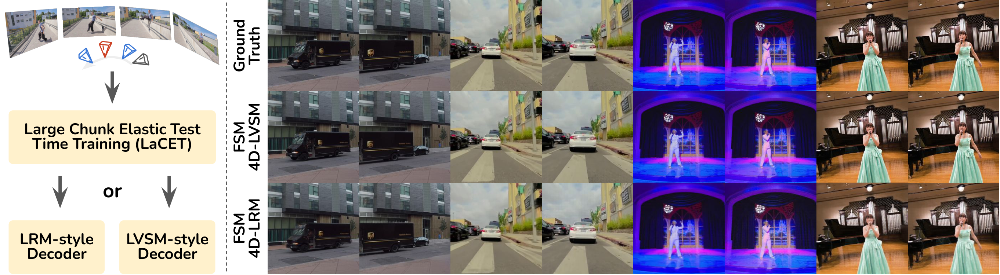
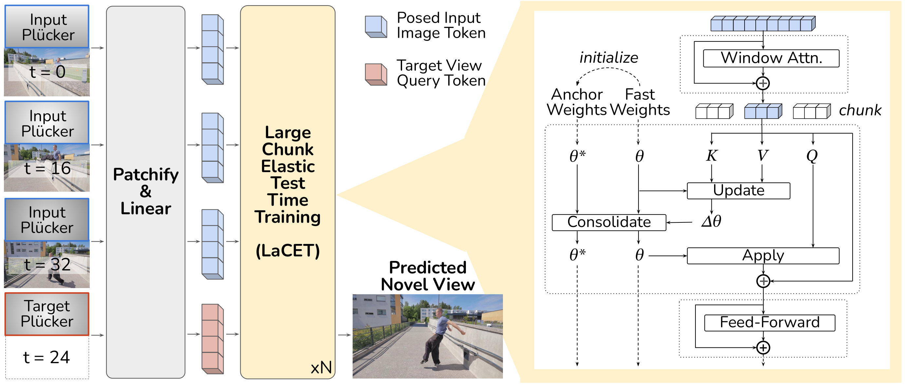

Large Chunk Test-Time Training (LaCT) has shown strong performance on long-context 3D reconstruction, but its fully plastic inference-time updates remain vulnerable to catastrophic forgetting and overfitting. As a result, LaCT is typically instantiated with a single large chunk spanning the full input sequence, falling short of the broader goal of handling arbitrarily long sequences in a single pass. We propose Elastic Test-Time Training inspired by elastic weight consolidation, that stabilizes LaCT fast-weight updates with a Fisher-weighted elastic prior around a maintained anchor state. The anchor evolves as an exponential moving average of past fast weights to balance stability and plasticity. Based on this updated architecture, we introduce Fast Spatial Memory (FSM), an efficient and scalable model for 4D reconstruction that learns spatiotemporal representations from long observation sequences and renders novel view-time combinations. We pre-trained FSM on large-scale curated 3D/4D data to capture the dynamics and semantics of complex spatial environments. Extensive experiments show that FSM supports fast adaptation over long sequences and delivers high-quality 3D/4D reconstruction with smaller chunks while mitigating the camera-interpolation shortcut. Overall, we hope to advance LaCT beyond the bounded single-chunk setting toward robust multi-chunk adaptation, a necessary step for generalization to genuinely longer sequences, while substantially alleviating the activation-memory bottleneck.
Fast Spatial Memory adopts an end-to-end feedforward network that patchifies posed images and augments them with Plücker ray maps and timestamp embeddings to form visual tokens. These tokens are processed by a stack of LaCET blocks — our novel Large-Chunk Elastic Test-Time Training backbone.
Each LaCET block maintains two sets of parameters: fast weights (adapted per-scene at inference) and anchor weights (a stable EMA reference). During a forward pass, the fast weights are updated chunk-by-chunk using KV statistics from input-view tokens, while the elastic consolidation term softly restores critical parameters toward the anchor to prevent drift. This stabilizes rapid adaptation while preserving genuine novel-view synthesis capability.
The model supports two decoding heads: (i) an LVSM-style lightweight linear decoder for direct RGB patch prediction, and (ii) an LRM-style decoder that predicts pixel-aligned 4D Gaussian Splatting primitives followed by differentiable rasterization.

Left: FSM takes a sequence of posed images at arbitrary times and renders novel view-time combinations. Right: The LaCET block maintains anchor and fast weights, tracking importance online to elastically consolidate updates.
Evaluated on Stereo4D and NVIDIA Dynamic Scene benchmarks at 256×256 resolution. Metrics are resolution-dependent; we adopt the lowest resolution for fair comparison. FSM-LVSM outperforms all prior feed-forward and optimization-based 4D methods across all metrics.
| Model | Stereo4D | NVIDIA | ||||||
|---|---|---|---|---|---|---|---|---|
| Res. | PSNR↑ | LPIPS↓ | SSIM↑ | Res. | PSNR↑ | LPIPS↓ | SSIM↑ | |
| Optimization-based | ||||||||
| SoM | — OOT (~10 min/scene) — | 379×672 | 15.30 | 0.509 | 0.317 | |||
| MoSca | — OOT (~45 min/scene) — | 379×672 | 21.45 | 0.265 | 0.712 | |||
| Feed-forward | ||||||||
| L4GM | — OOT (requires MVD prior) — | 256×256 | 10.07 | 0.587 | 0.235 | |||
| 4DGT | 504×504 | 24.62 | 0.102 | 0.785 | 504×504 | 14.13 | 0.640 | 0.131 |
| MoVieS | 504×504 | 27.19 | 0.114 | 0.888 | 379×672 | 19.16 | 0.315 | 0.514 |
| FSM-LRM (ours) | 256×256 | 27.29 | 0.147 | 0.876 | 256×256 | 20.17 | 0.337 | 0.567 |
| FSM-LVSM (ours) | 256×256 | 32.16 | 0.043 | 0.931 | 256×256 | 23.90 | 0.105 | 0.747 |
Evaluated on DL3DV-140 at 256×256 resolution. FSM-LVSM achieves the best LPIPS and SSIM among all methods at the same resolution, demonstrating that LaCET preserves strong 3D capability while adding 4D generalization.
| Model | DL3DV | |||
|---|---|---|---|---|
| Res. | PSNR↑ | LPIPS↓ | SSIM↑ | |
| Static Models | ||||
| DepthSplat | 512×448 | 17.81 | 0.356 | 0.596 |
| GS-LRM | 256×256 | 23.02 | 0.266 | 0.705 |
| LVSM | 256×256 | 23.10 | 0.257 | 0.703 |
| RayZer† | 256×256 | 23.72 | 0.222 | 0.733 |
| LongLRM | 540×960 | 24.10 | 0.254 | 0.783 |
| tttLRM | 540×960 | 25.07 | 0.215 | 0.822 |
| tttLVSM | 540×960 | 26.90 | 0.185 | 0.837 |
| FSM-LRM (ours) | 256×256 | 23.59 | 0.206 | 0.766 |
| FSM-LVSM (ours) | 256×256 | 26.69 | 0.091 | 0.846 |
| Dynamic Models | ||||
| FSM-LRM (ours) | 256×256 | 21.89 | 0.314 | 0.692 |
| FSM-LVSM (ours) | 256×256 | 24.61 | 0.118 | 0.787 |
† RayZer ignores input poses and uses target reference images, placing it between pose-conditioned and pose-free approaches.
@arxiv{ma2026fastspatial,
title = {Fast Spatial Memory with Scalable Elastic Test-Time Training},
author = {Ma, Ziqiao and Yu, Xueyang and Zhen, Haoyu and Yang, Yuncong and Chai, Joyce and Gan, Chuang},
year = {2026}
}{kind=link}
{kind=link}
{kind=link}
{kind=link}
{kind=link}
{kind=link}
{kind=link}
{kind=link}
{kind=link}
{kind=link}
{kind=link}
{kind=link}
{kind=link}
{kind=link}
{kind=link}
{kind=link}